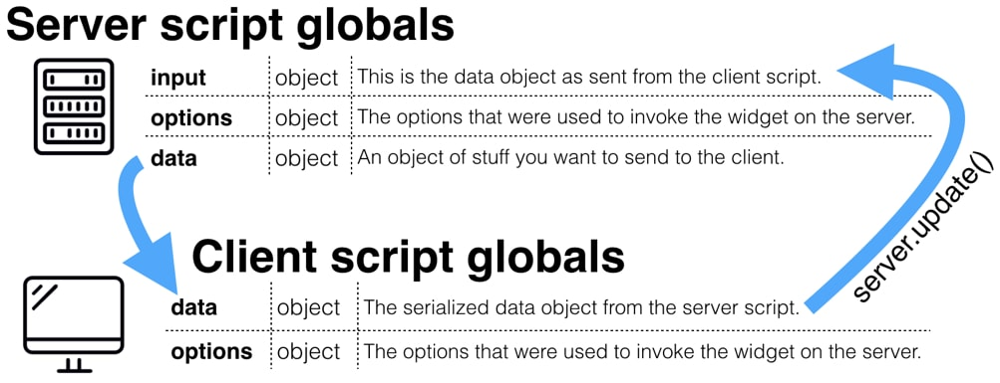

Service Portal¶
Overview¶
This will discuss using Angular and coding widgets to create a Service Portal with as much, if not more, features as the Content Management System
Understanding How Server Script Works¶
The Flow of Data from ServiceNow Docs
The Server Script on a widget is executed onLoad and can be used to transfer a data object from the server to the client. On the client, this data object is very important for fleshing out your portal page.
Let’s say you want a widget of vip users and their picture. The server would send the data with that information and the client receives that data object and then displays it the way you desire.
data.names = [];
var userGR = new GlideRecord("sys_user");
userGR.addQuery("vip", true);
userGR.query();
while (userGR.next()) {
data.names.push(userGR.name.toString());
}
Once the code reaches the bottom the data object will be sent. So now you have an array of VIP names that you can use.
The Client can send Data also¶
So let’s say you want to give users the ability to change what kind of users they want to see. For example, the user chooses to query for, let’s say, all ITIL users.
On the client side code, create an object literal called input and fill in the information the server would need. For this example, we can send the string “itil” in the input object. Once we are ready we use server.update() to send the input object to the server.
var c = this;
var input = {};
$scope.onItilButtonClick = function() {
input.button = "itil";
c.server.update();
}
After c.server.update();, the process then repeats sending whatever data object the server now has back to client, and re-renders if anything changes.
Processing the input sent from client¶
The server client script gets processed in whole after a c.server.update(), so to prevent the original query from being processed, we’ll have to wrap what we want in an if (input) {} statement. The only difference from the first onLoad and the runs from the client is the appearance of the input object.
data.names = [];
if (input) {
var userGR = new GlideRecord("sys_user");
userGR.addQuery('roles=' + input.button);
userGR.query();
while (userGR.next()) {
data.names.push(userGR.name.toString());
}
} else {
var userGR = new GlideRecord("sys_user");
userGR.addQuery("vip", true);
userGR.query();
while (userGR.next()) {
data.names.push(userGR.name.toString());
}
}
The else statement here is defaulted to searching for vip. When an input is sent to the server it will start a new query looking for whatever role is in input.button.
Code that you want to run on both onLoad and when a client re-renders, just put them in the script normally. Such as the initialization of the data.names array on the first line.
Warning
Only data will get sent to the client from the server. If you want to send input back you must put it back into the data object.
if (input) {
data.foo = input.foo
}